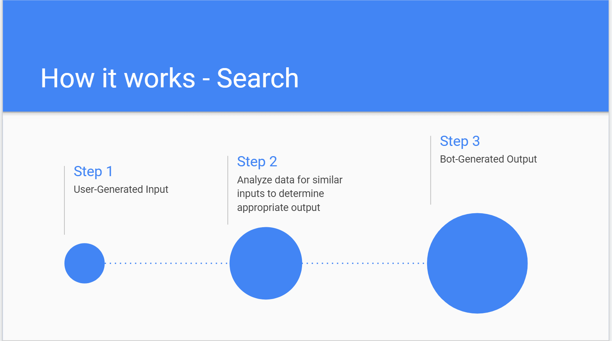
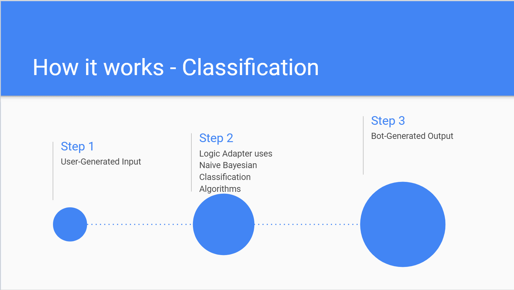
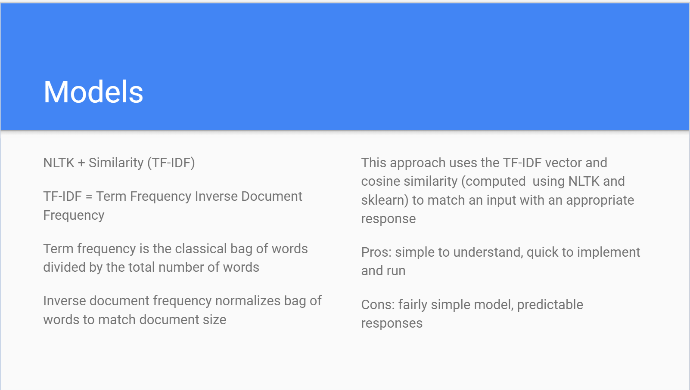
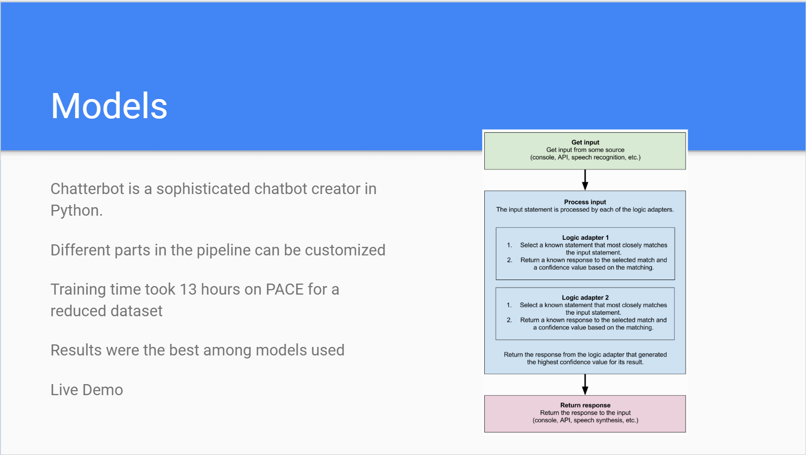
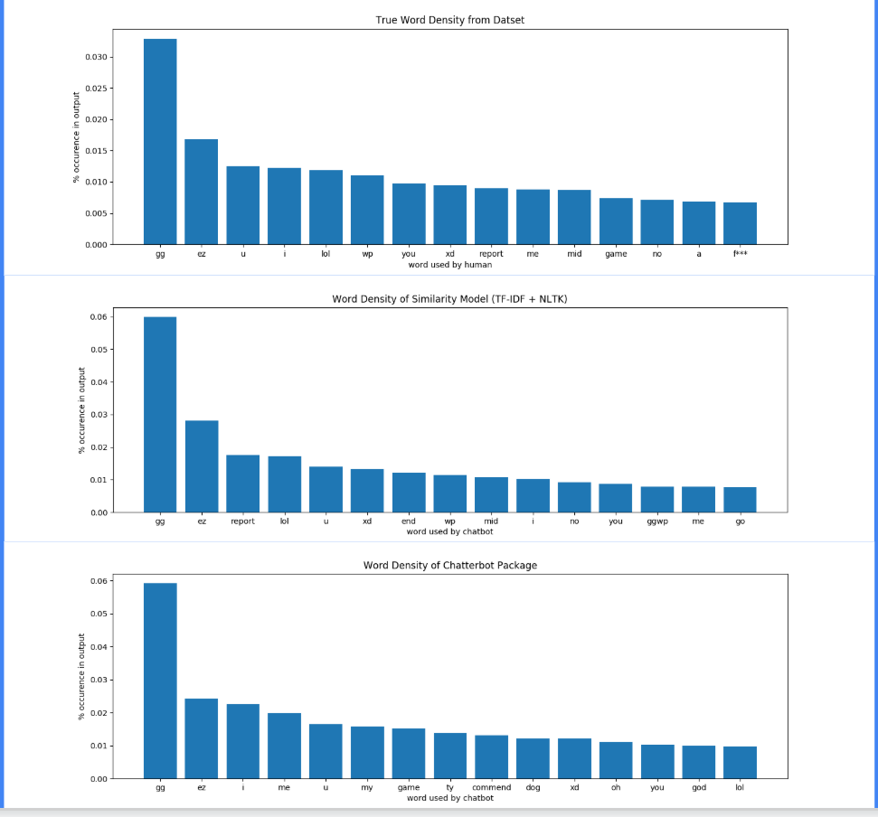

DotAI (DOTA 2 Machine Learning Chatbot)
Using a DOTA 2 chats dataset from Kaggle (GOSU.AI DOTA 2 Game Chats), we trained multiple machine learning models in python to generate human-like chats.
The first chatbot we implemented and trained comes from a Medium article titled "Building a Simple Chatbot from Scratch in Python (using NLTK)." NLTK is a natural language toolkit in python with "classification, tokenization, stemming, tagging, parsing, and semantic reasoning, wrappers for industrial-strength NLP libraries." The article depicts the evolution of chatbots as follows:

Placeholder
Motivation
Chatbots are used heavily in gaming and customer service. Generate text based on what is “normal”. Can be used to improve the user experience with an interface
Dataset
Used anonymized game chat data to give our bot a word bank. Bot then uses that data to respond to an input with an appropriate response. Trained with 10,000 lines of text. Tested against 10,000 lines as well
Approach
Using best match methods, the bot learns to communicate in a given environment. Different environments require distinct responses.
Search Mechanism
Classification Mechanism
Models
 Results
The goal is to create a chatbot indistinguishable from a human DOTA 2 player. Currently near impossible in practice. Metrics for what is “human-like” are difficult to construct. Common metric is finding the word density in the dataset and chatbot outputs
